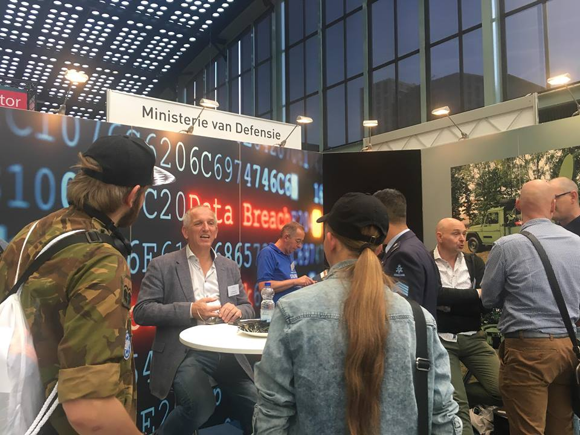
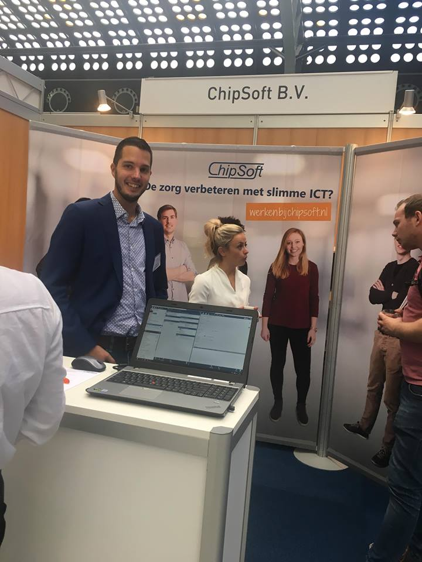
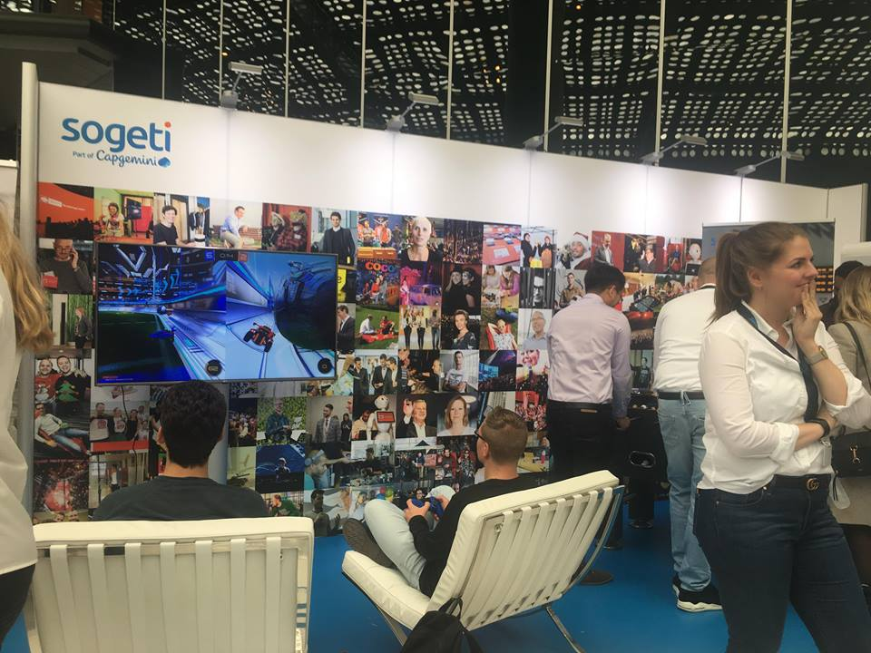
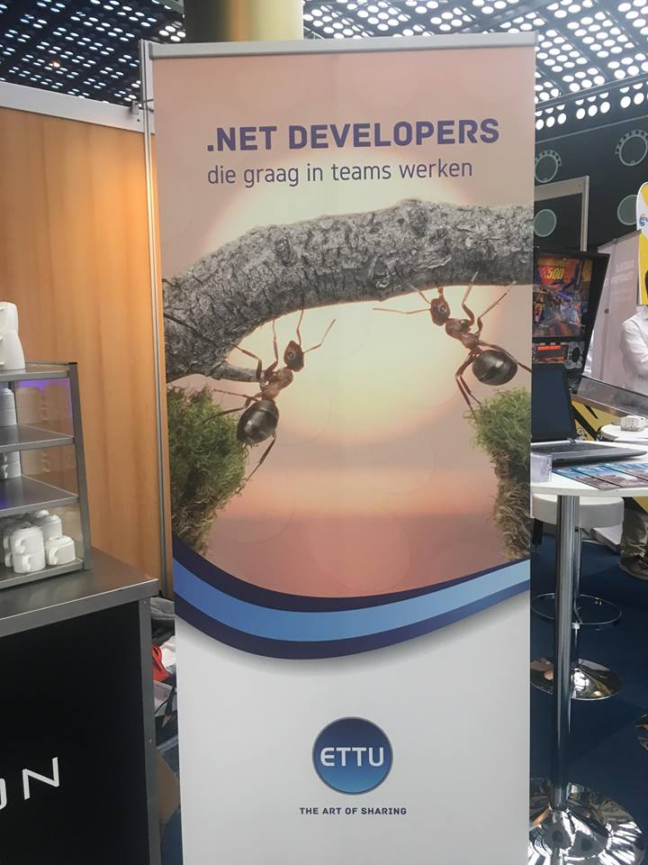
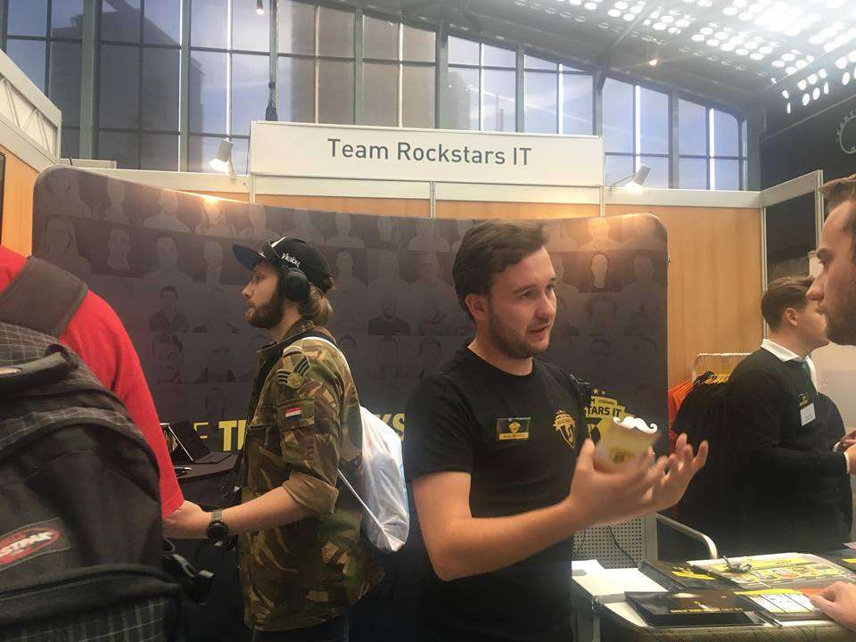
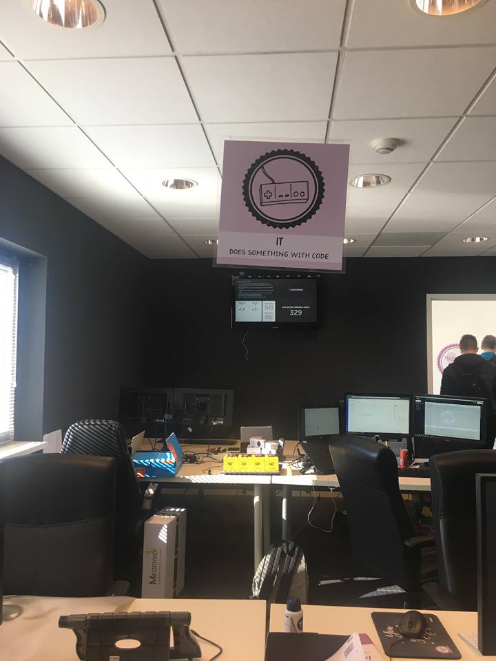
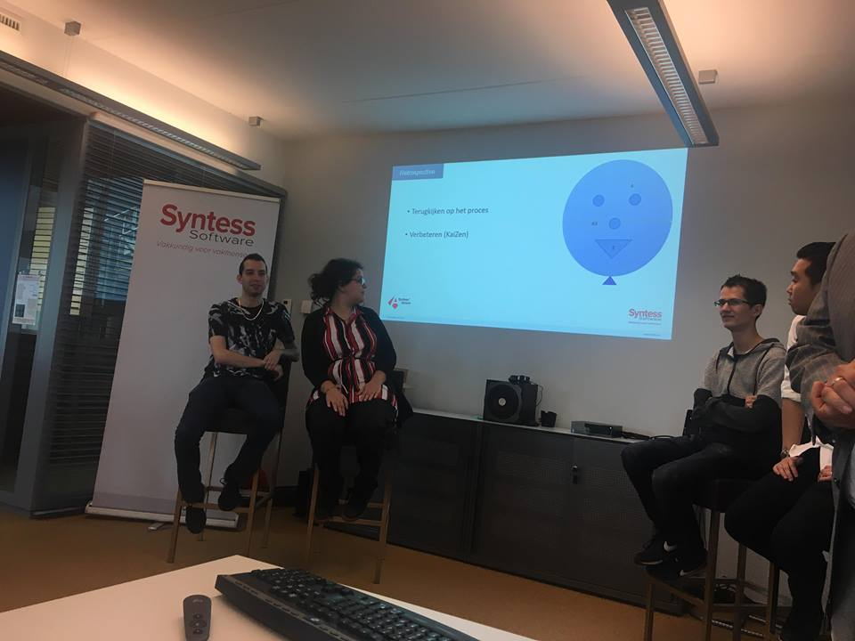
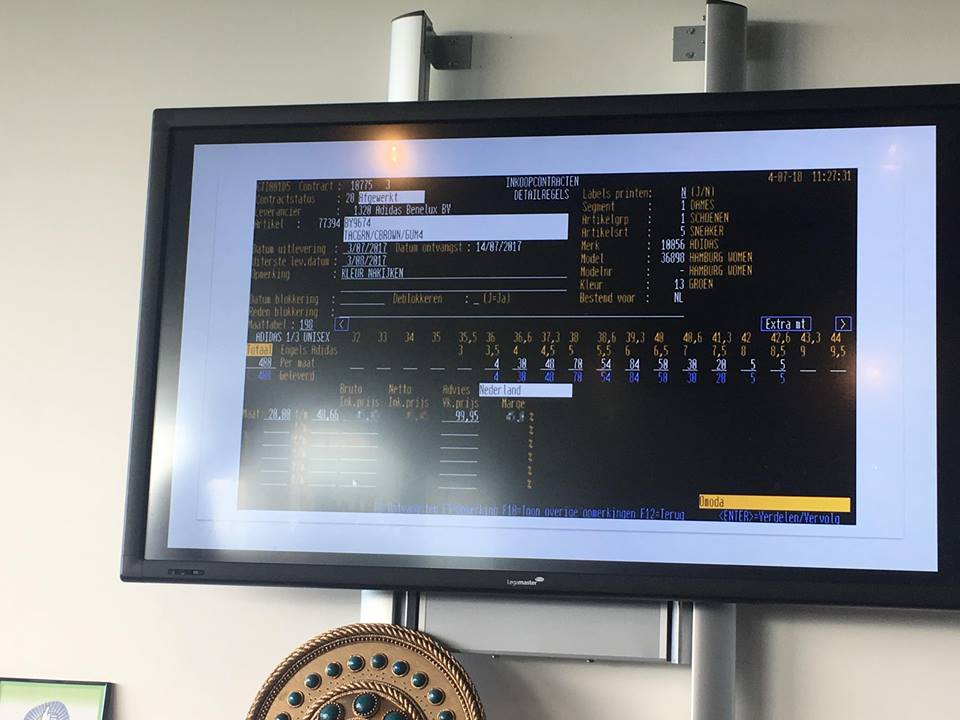
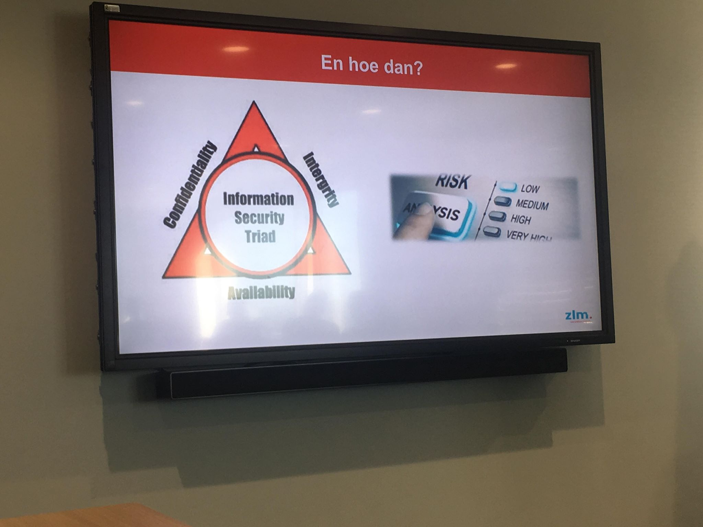
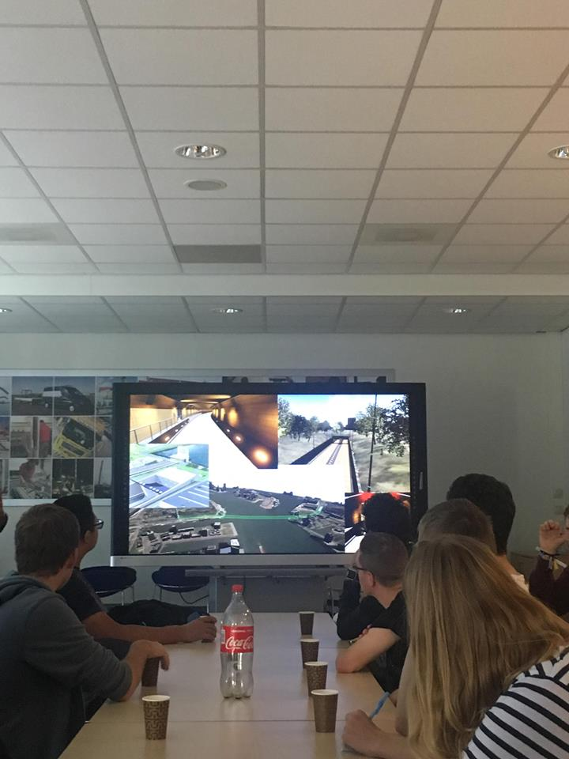

HBO-I Job Event

Ministerie van Defensie

Het ministerie van defensie is een groot overheidsinstantie die verschillende banen biedt en daarom dus ook
verschillende mensen trekt.
Hun motto is daarom ook :
"Het gaat niet om wat je bent, maar om wat je kunt en doet!"
Defensie biedt ook banen voor ICT enkele functies zijn :
- Data Analist
- Soldaat verbindingsdienst (ICT)
- Officier ICT manager
- Officier Specialist Cyber
- Onderofficier operationele dienst verbindingen
Binnen defensie werken ze vooral met netwerk verbindingen, radioverbindingen en satellieteverbindingen.
Maar als Specialist cyber hou je je bijvoorbeeld bezig met het ontwikkelen van software en het hacken van
systemen om zo de Nationale en Internatiole veiligheid te verbeteren dat doen ze doormiddel van encryptie
code's bijvoorbeeld SSL.
Defensie heeft ook een website, dus komen er ook front end developers aan te pas waarschijnlijk doen ze dat
onder andere met HTML en javaScript.
ChipSoft B.V.

ChipSoft is een groot bedrijf, wat zich bezig houd met software binnen zorginstellingen.
ChipSoft ontwikkelt software voor in de zorg, van administratieve taken tot aan algoritmes die een betere
planning
bedenken.
Het bedrijf houdt zich niet alleen bezig met het ontwikkelen van software, maar ook geven ze
voorlichting over hoe de software werkt.
Het bedrijf is rijk aan ICT functies ik zal er enkele benoemen :
- Technisch consultant
- Mobile App Developer
- Net ontwikkelaar
Het bedrijf werkt met Visuals Code, Xamarin en SQL
Sogeti

Dit bedrijf is internationaal georienteerd en heeft meer dan 2500 IT professionals in dienst.
Het bedrijf biedt digital- en transformation consulting aan en zij maken daarbij gebruik van blockchain en AI.
ETTU

Ettu is een internationaal bedrijf, wat zich focust op specialisatie i.p.v. generalisatie.
Ze hebben gekozen om zich te specialeren in Microsofttechnologie met Azure, Office 365 en NET.
Ook werken ze vaak met de Hololens.
Het bedrijf heeft meer dan 85 professionals.
Enkele functies die in het bedrijf vindbaar zijn : Cloud Architect, Solution architect en Office 365
Developer.
Het bedrijf werkt met veel technieken :
Machine Learning, Cosmos DB Tables, API, Azure Logic Apps, Azure Notification Hub, Azure Stream Analytics
en MS SharePoint.
Team Rockstar IT

Rockstar IT is een middelgroot bedrijf dat ICT'ers helpt bij het vinden van een stageplek, een bijbaan of
vaste functie's
Hun focus ligt vooral bij Java, backend .NET en mobile.
Ze hebben een eigen website en een app alleen voor interne medewerkers.
Bedrijven Safari

Syntess

Syntess is een totaal leverancier met inmiddels +- 3000 klanten.
Het bedrijf ontwikkelt onder andere ERP- en mobiele software voor in de elektrotechniek, loodgieters en
voor in de beveiliging.
Ze ontwikkelen de software niet alleen maar ze zorgen ook voor de service en onderhoud.
De software ontwikkelaars werken vooral met TypeScript, Delphi, SheaSharp en Azure.
Omoda

Omoda is ooit begonnen als een klein familiebedrijf in de schoenenbranche en is nu inmiddels uigegroeit
naar meerdere filialen, een webshop en zelfs op je mobiel kun je bij Omoda shoppen.'
We mochten een kijkje nemen bij hun op het hoofdkantoor en in de fabriek kijken.
We kregen eerst een rondleiding door het distributie centrum waar mensen en software het werk doen.
In de loopbanden wat de schoenen en dozen sorteert zit scan software, zodat het proces sneller en
nauwkeuriger verloopt.
Daarna kregen we een presentatie van de IT-Manager en konden we vragen stellen.
Omoda werkt onder andere met AS400 zodat ze de details van het product kunnen toevoegen op de site, zodat
de klant beter kan filteren naar waar hij op zoek is.
Verder werken zij nog met JavaScript, XML en OIL.
Your Surprise

Your Surprise is een gepersonaliseerde cadeaushop het idee is op een zolderkamer begonnen met een cd'tje.
Inmiddels is het bedrijf nu internationaal gegaan en bied het tientallen producten aan zoals, mokken,
kussenslopen,kalenders etc.
De data analist die daar aan het werk is houdt onder andere bij welke web lay out trekt nou de meeste klanten.
Ze houden zich niet alleen bezig met de website en het analyseren van data, ook hebben ze hun eigen team die de
software voor de hardware ontwikkelt.
Het plaatje hier boven is een voorbeeld van de hardware, een barcode scanner d.m.v een camera.
Ze werken vooral met Java, Ruby, Docker PHP, CSS XML en Google Analytics.
ZLM

ZLM is een verzekerings bedrijf gevestigd in Zeeland die verzekeringen afslluiten binnen Zeeland en Noord-Brabant.
Ze verzekeringen onder andere auto's, inboedels en gezinsongevallen. Het bedrijf geeft aan vooral naar de klant tevredenheid te streven en niet naar een groot klantbestand.
Binnen het bedrijf werken ze met verschillende technieken, ze hebben bijvoorbeeld software voor hun administratie maar ook zorgen ze zelf voor hun eigen Cyber Security.
Enkele functie's zijn : ICT architect, Security officer , Analist-Programmeur en Software Ontwikkelaar.
Ze werken vooral met Oracle Forms,Oracle Designer, Java, Exstream, Sun, Eclipse, PL/SQL, ESB en IIP.
Soltegro

Het bedrijf houdt zich bezig met het visualiseren van werkplekken en infrastructuren.
Maar ze maken ook software voor hardware bijvoorbeeld robots of scan beamers.
Ze werken vooral met CIS, ML, PHP , SeaSharp en UnReal.
De functies die binnen het bedrijf te vinden zijn onder andere System Engineer, Technisch Professional en Game Artist.